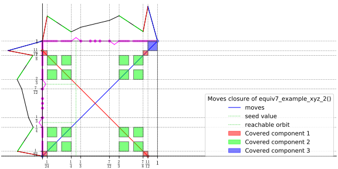
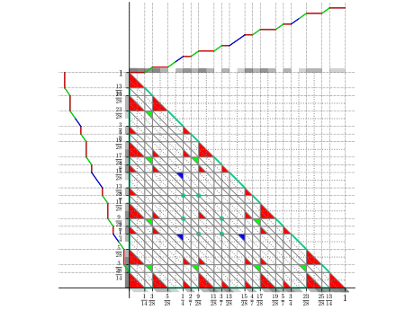
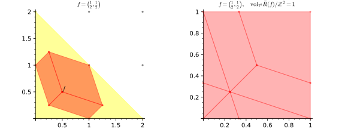

cutgeneratingfunctionology: Python code for computation and experimentation with cut-generating functions¶

Most of the code is for the 1-dimensional Gomory-Johnson infinite group problem, including an electronic compendium of extreme functions.
See http://www.sagemath.org/doc/tutorial/ for information on how to use Sage.
Code for the 1-row Gomory–Johnson Infinite Group Relaxation¶

Mathematical background:
- See the survey “Light on the Infinite Group Relaxation” (http://www.optimization-online.org/DB_HTML/2014/10/4620.html) for the mathematical background and a table of functions in the electronic compendium.
- See also the paper “An electronic compendium of extreme functions for the Gomory–Johnson infinite group problem” (http://www.optimization-online.org/DB_HTML/2014/11/4646.html) for a discussion of several functions in the compendium.
To use this module, you need to import it:
import cutgeneratingfunctionology.igp as igp
from cutgeneratingfunctionology.igp import *
Code for Classical and General Dual-Feasible Functions¶

To use this module, you need to import it:
import cutgeneratingfunctionology.dff as dff
from cutgeneratingfunctionology.dff import *
Code for Multi-Row Models¶

To use this module, you need to import it:
import cutgeneratingfunctionology.multirow as multirow
from cutgeneratingfunctionology.multirow import *

{kind=link}